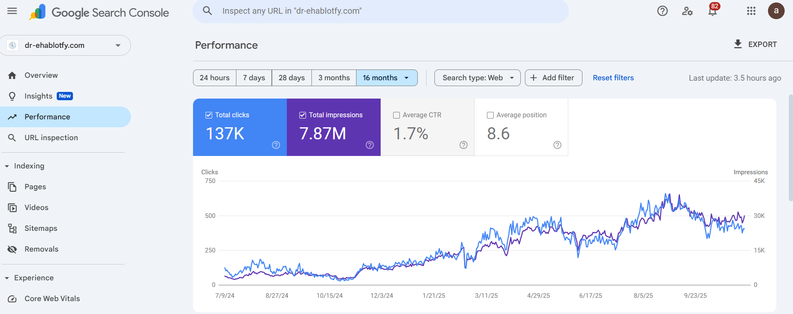

A healthcare SEO campaign focused on bariatric surgery visibility, service-page rankings, local SEO, and authority building.
Organic Clicks
Impressions
Target Market
Growth Campaign
The bariatric surgery market is highly competitive with multiple clinics and surgeons competing for the same high-intent keywords.
The objective was to improve visibility across treatment pages, increase organic traffic, and generate more qualified patient inquiries.
I developed the SEO roadmap, keyword strategy, content structure, and optimization framework for key bariatric surgery services.
The campaign focused on treatment-related keywords, patient education content, and service-page visibility.
Content creation, internal linking, metadata improvements, and ongoing Search Console analysis were used to strengthen rankings.
Screenshot showing search growth, impressions, clicks, and organic visibility improvements.

Healthcare SEO success comes from combining technical SEO, content strategy, local visibility, and strong service-page optimization.
If you're looking to increase organic visibility, generate qualified leads, and build long-term search growth, let's talk.